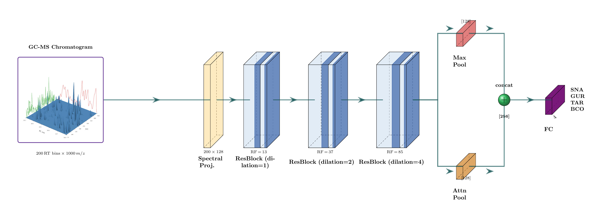

103 chromatograms, four species, six body parts
Lipids were extracted from six body parts of Snapper, Gurnard, Tarakihi and Blue Cod and run on coupled gas chromatography–mass spectrometry. Each run becomes a 200 × 1000 matrix: 200 retention-time bins from 5 to 45 minutes, each holding a mass spectrum. Every bin is square-root transformed and scaled to unit length, so the model sees the shape of each spectrum along the run, not its absolute intensity.
Where the samples come from
Four species, one trace each
Summed √intensity across m/z for the first sample of each species. Hover to read all four at one retention time. The same lipid classes elute everywhere; what differs is the relative pattern.
Pretrain on synthetic chemistry, fine-tune on fish
Labelled GC-MS data is scarce, so ChromaDCNN first learns from chromatograms that do not exist. None of the fish data is used for pretraining, so nothing leaks into the cross-validation folds.
Synthesise
9,553 electron-ionisation spectra from MoNA and MassBank are mixed into synthetic chromatograms: 5–30 compounds per run, each eluting as a Gaussian peak of random position and width.
Pretrain
The network predicts the next bin's spectrum from the bins before it (next-frame prediction, 20,000 iterations), learning how co-eluting compounds and peak shapes behave.
Fine-tune & evaluate
The pretrained encoder gets a 4-way head and is fine-tuned on the fish data under 10 seeds × 5-fold stratified cross-validation, with a nested validation split for early stopping.
Architecture, stage by stage
Click a stage. Bar width is its share of the 819,717 parameters.
Show the paper's architecture figure

How far can one output bin see?
Six dilated convolutions widen the receptive field from 7 bins to 85, about 17 minutes of run time.
A synthetic run, and the next-frame game
The pretraining task: given every bin so far, predict the next one.
Pretrained ChromaDCNN beats every classical baseline
Fourteen methods, each scored on the same 50 held-out folds (10 seeds × 5 folds). Classical baselines (PLS-DA, random forest, RBF-SVM, MLP) are tuned by inner cross-validation on three representations of the chromatogram: the summed spectrum, the per-m/z maximum, and 50 principal components of the full 2D matrix. Every dot is one fold.
Box: median and quartiles over 50 folds; the large marker is the mean. Vertical rule: chance (0.25). Hover a dot for its fold.
Full table
Mann–Whitney U against the best method, Bonferroni-corrected over 13 comparisons; |r| is rank-biserial effect size. Click a header to sort.
Synthetic pretraining adds 25 points
The same network trained from random initialisation reaches only 0.605. Both conditions use identical seeds and folds, so every fold can be compared directly.
Fold by fold
Distribution over 50 folds
From scratch is also far less stable: SD 0.146 against 0.094 pretrained.
Does the model need retention time?
Replace every chromatogram with its summed spectrum, copied into all 200 bins. The model, hyperparameters and training code are unchanged, but there is no retention-time structure left to use.
Collapse the RT axis
Watch the input the model receives, and what happens to its accuracy.
50 folds each, same seeds
Without RT, ChromaDCNN falls to the level of classical models on the summed spectrum (PLS-DA: 0.429, dashed). Its advantage comes from when compounds elute, not just which ions appear. Mann–Whitney p = 2.0 × 10−7, |r| = 0.60.
Where in the chromatogram is the evidence?
Gradient saliency |∂logitc/∂X| for the true class, computed only on held-out samples: one pretrained model per fold (seed 0, mean fold balanced accuracy ), averaged per species.
Retention-time profile
m/z profile
Share of RT saliency by window
40–44 min dominates for every species; Tarakihi is the most concentrated.
What these results do and don't show
Few individuals
The 103 samples come from six fish: one each of Snapper, Gurnard and Tarakihi, and three Blue Cod. Cross-validation is stratified by species, so body parts of the same fish fall on both sides of a split. The accuracies measure generalisation across body parts and replicates, not to new individuals.
Approximately causal pretraining
The convolutions only look backwards in retention time, but batch-normalisation statistics are computed over the whole sequence during training, so the next-frame objective is approximately rather than strictly autoregressive.
Saliency is one seed
The saliency maps use seed 0 only and show where the gradient is large, which is not the same as a causal attribution to specific compounds.
Class imbalance
Blue Cod makes up 57 of 103 samples. All results are balanced accuracy, and training uses a class-weighted loss.
Not a universal win
On public urine (MTBLS71) and rice (MTBLS288) datasets, classical sum-spectrum baselines beat the 2D CNN. There the retention-time axis is dominated by a nuisance variable rather than the target class. The advantage shown here needs chromatographic structure that is informative for the label.
One instrument, one lab
All runs come from a single GC-MS method. Transfer across instruments, columns or acquisition batches is untested.
Run it yourself
The preprocessed fish oil data and the pretrained checkpoint are in the repository. Every number on this page is read
from results/fish_oil/ by scripts/13_build_site_data.py.
# clone, install git clone https://github.com/woodRock/chroma-dcnn.git cd chroma-dcnn pip install -e ".[dev]" # ~10 min on a GPU for the CNN; baselines are CPU-only python scripts/04_finetune_evaluate.py # ChromaDCNN, 10 seeds × 5 folds python scripts/05_run_baselines.py # PLS-DA, RF, SVM, MLP python scripts/12_results_table.py # ranking + statistics python scripts/09_ablation_1d_vs_2d.py # RT-collapse ablation python scripts/11_saliency.py # saliency maps python scripts/13_build_site_data.py # refresh this page
@misc{wood2026chromadcnn,
author = {Wood, Jesse},
title = {chroma-dcnn: GC-MS Fish Species
Identification with Self-Supervised
Pretraining},
year = {2026},
url = {https://github.com/woodRock/chroma-dcnn}
}